Item | iMean | iMedian | iSD | iSkew | iRMSSD |
|---|---|---|---|---|---|
愉快(Cheerful) | 4.34 (0.86) | 4.42 (1.04) | 1.18 (0.31) | -0.27 (0.57) | 1.39 (0.37) |
易怒(Irritable) | 1.98 (0.78) | 1.61 (0.88) | 1.08 (0.41) | 2.09 (1.60) | 1.36 (0.51) |
动机(Motivated) | 3.76 (0.87) | 3.77 (1.11) | 1.26 (0.34) | -0.10 (0.62) | 1.53 (0.45) |
紧张(Nervous) | 2.22 (0.91) | 1.89 (1.09) | 1.11 (0.41) | 1.69 (1.62) | 1.30 (0.49) |
不堪重负(Overwhelmed) | 2.39 (1.02) | 2.09 (1.23) | 1.18 (0.44) | 1.53 (1.86) | 1.36 (0.52) |
放松(Relaxed) | 4.34 (0.80) | 4.48 (0.99) | 1.27 (0.33) | -0.34 (0.54) | 1.53 (0.43) |
反刍(Ruminate) | 2.01 (0.90) | 1.70 (1.01) | 1.00 (0.45) | 2.26 (2.22) | 1.18 (0.52) |
悲伤(Sad) | 1.88 (0.77) | 1.55 (0.83) | 1.00 (0.42) | 2.51 (2.10) | 1.15 (0.47) |
压力(Stressed) | 2.58 (0.94) | 2.28 (1.17) | 1.25 (0.39) | 1.07 (1.36) | 1.42 (0.47) |
疲倦(Tired) | 3.73 (0.94) | 3.67 (1.22) | 1.41 (0.34) | 0.14 (0.61) | 1.73 (0.45) |
注：开头字母i表示个体概括统计 | |||||
- 生态瞬时评估（ecological-momentary-assessment，EMA）
- 对个人日常生活的反复评估（多次评估嵌套在个体层次下）
- 需要展示数据个体内和个体间的动态变化
- 文章主要展示可视化，结构如下
- 分布
- 情景
- 时间稳定性
- 分解变异源
- 跨时间尺度测量
1 方法
1.1 WARN-D
- 本项目目的是建立一个关于高等教育学生抑郁症的个性化的早期预警系统
- 4个队列，每个队列500人，共2000名学生（每个队列仅存在收集时间差异）
- 整个研究持续2年
- 完成基线调查
- 进行3个月每日数据收集
- 每天在4个半随机的时间点收到提醒，要求完成问卷
- 同时佩戴手环收集活动、睡眠和心率等数据
- 周末额外填写关于这一周的问卷，内容和EMA问卷重叠
- 之后21个月，每3个月进行一次随访
- 本研究选取前两个队列，抽样70%后（剩余30%作为验证集），排除漏答率大于70%的样本后，共得到499名被试
1.2 软件和可视化
- 使用R语言，详细环境和本文所用数据见https://osf.io/yf3up
- 可视化原则
- 明确展示被试、项目和时间的异质性
- 使用颜色突出差异，同时保持对色盲友好
- 在呈现汇总值或估计值时绘制原始数据点和（或）展示不确定性
2 结果
2.1 分布（Distributions）
2.1.1 概括统计量
先计算个体内，再计算个体间，而不是计算整体
RMSSD：root mean square of successive difference，展示变化剧烈程度
\[RMSSD = \sqrt{\frac{1}{n-1} \sum_{i=2}^{n} (x_i - x_{i-1})^2}\]
- 表 1 表明
- 被试整体易怒水平较低（1.98±0.78）
- 动机水平中等（3.76±0.87）
- 愉快和放松左偏态（偏度<0）
- 负面情绪右偏态(偏度>0)，暗示存在地板效应
- RMSSD数值接近，但整体偏大
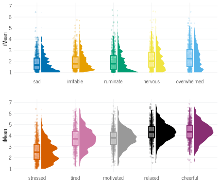
- 图 1 表明
- 负面情绪存在地板效应
- 部分变量存在多峰分布
2.1.2 模态（Modality）
- 概括统计不足以展示变量的具体情况，双峰分布在数据上也可能类似正态分布
- 双峰分布可能暗示被试在多个水平之间来回切换
- 许多时间序列统计模型的前提假设是单峰分布，双峰分布的话结果不准确
- 可用目测边缘分布的方式进行检查(Haslbeck et al. (2023))
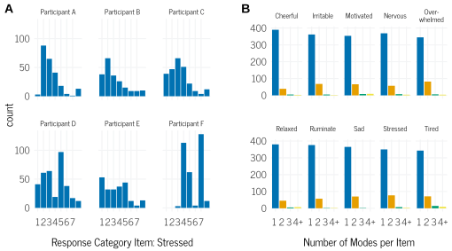
- 图 2 表明
- a展示了6个被试在压力上的分布
- b展示了多个项目的分布
2.1.3 地板效应
- EMA存在地板效应（常见）和天花板效应（少见）
- 地板效应可能说明
- 事件或状态不常见
- 被试并没有将变量视为连续，而是先评估是和否，是才打大于1的分
- 可通过展示打最低分的时间百分比的人数分布来判断地板效应
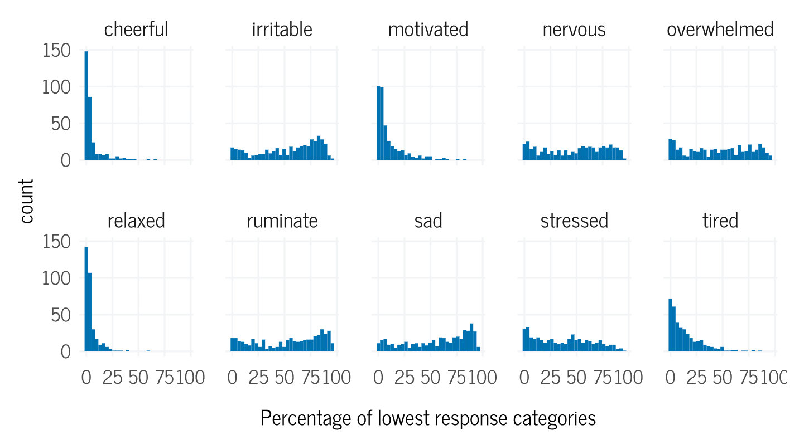
2.2 情景
- EMA可以结合情景进行分析
2.2.1 不同活动下的反应
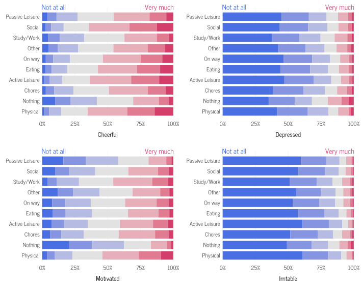
- 社交活动时，愉快报告更多高水平
- 学习/工作对比休闲，动机报告更多高水平
- 图 5 中的a展示了学习/工作和社交的差异
2.2.2 一天中的时间效应和周内效应
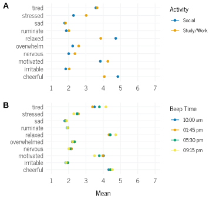
- 晚上动机水平较低
- 疲倦时间效应最明显
- 提醒太频繁或太少都会影响信息获取，且针对不同项目，信息获取最优频率不同
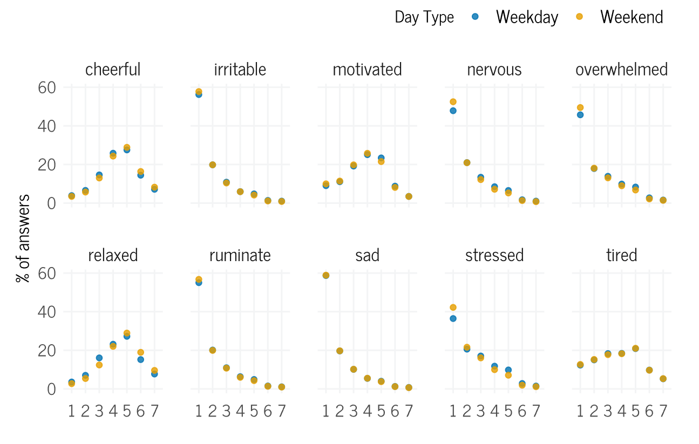
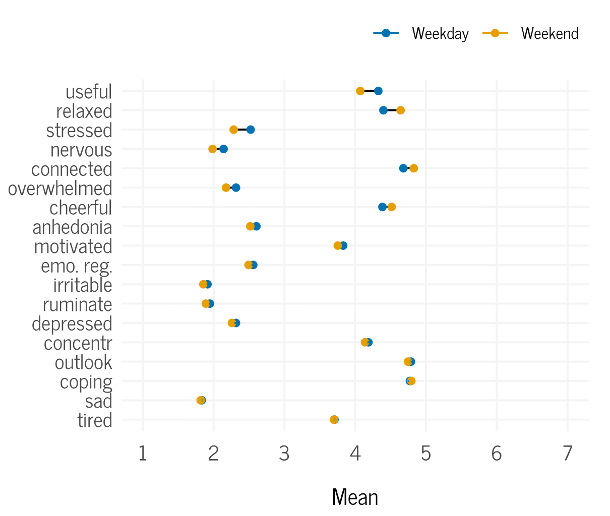
2.3 跨时间
- 时间序列模型通常假设均值和方差随时间没有（持续性）变化
- 需要同时考虑群体和个体
2.3.1 群体层面
- 图 8 中实线是变化曲线，虚线是整体均值，竖线是周一
- 压力一开始高于均值，因为前20天是考试周
- 学生样本前后波动较小，如果是接受治疗，可能会有较大变化
2.3.2 个体层面
2.3.2.1 稳定性
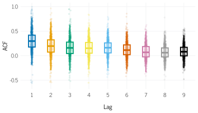
- 短期滞后被认为是惯性（inertia），长期是记忆（memory）
- 压力在滞后4和5下有些许提高，说明压力在24小时内（一天测4次）具有一定稳定性
2.3.2.2 差异性
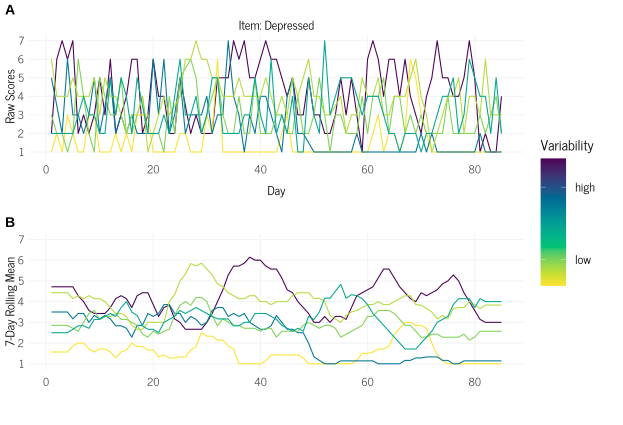
- 图 10 a展示了个体抑郁随时间变化的情况
- 图 10 b展示了移动窗口（7天平均）技术下的个体抑郁随时间变化的情况
- b可以更好的展示抑郁变化
- 还可以在旁边添加选项分布，更好的展示具体情况，如@fig-11
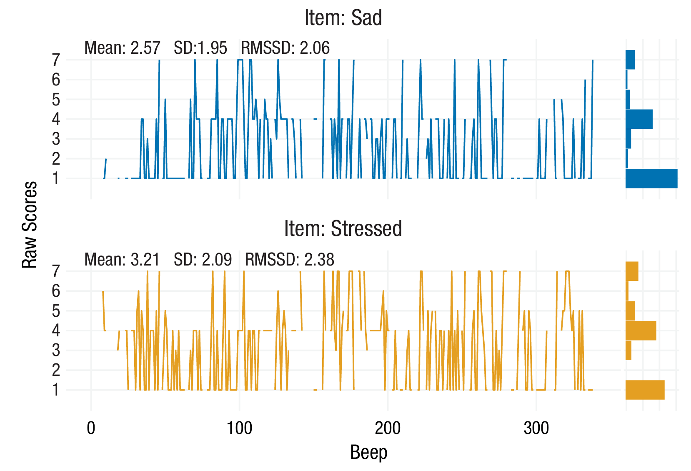
2.4 分解变异源
- 组内相关系数（ICC）：组间方差与总方差的比值，ICC越大说明个体间差异影响越大，个体内差异影响越小
\[ \text{ICC} = \frac{\sigma_b^2}{\sigma_b^2 + \sigma_w^2} \]
其中：
\(\sigma_b^2\)：表示组间方差
\(\sigma_w^2\)：表示组内方差
Item | ICC |
|---|---|
消极思维(Negative thoughts) | 0.43 |
不堪重负(Overwhelmed) | 0.42 |
紧张(Nervous) | 0.39 |
抑郁(Depressed) | 0.36 |
悲伤(Sad) | 0.35 |
压力(Stressed) | 0.35 |
心境展望(Outlook) | 0.34 |
愉快(Happy) | 0.32 |
疲倦(Tired) | 0.32 |
恼怒(Annoyed) | 0.31 |
情绪应对(Emotional coping) | 0.30 |
动机(Motivated) | 0.30 |
快感缺失(Anhedonia) | 0.29 |
注意力集中(Concentrate) | 0.28 |
应对方式(Coping) | 0.28 |
放松(Relaxed) | 0.26 |
幸福体验(Eudaimonia) | 0.23 |
- ICC越高说明更多的变异来自个体间，因变量主要被个体间差异解释
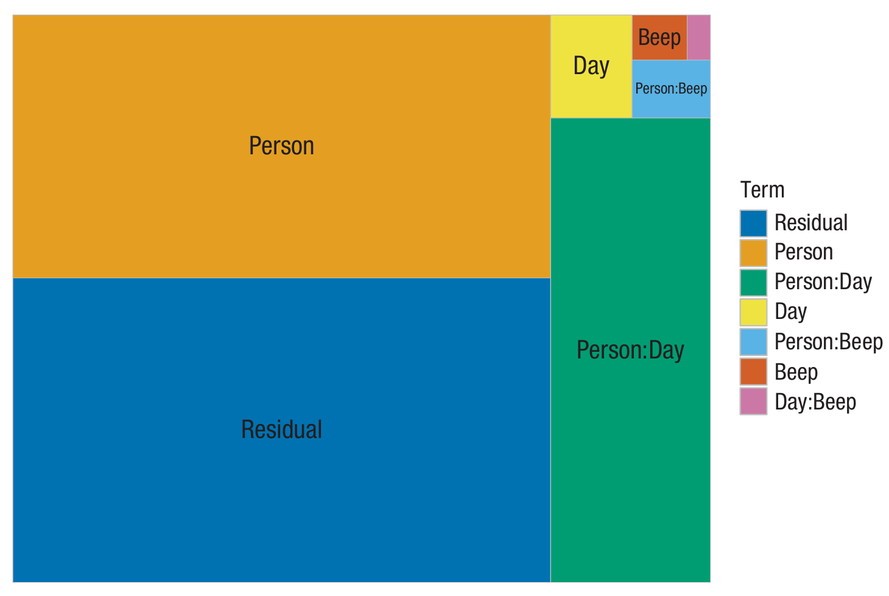
2.5 跨时间尺度测量
- 判断是否有预测效果
- EMA项目与基线之间的相关
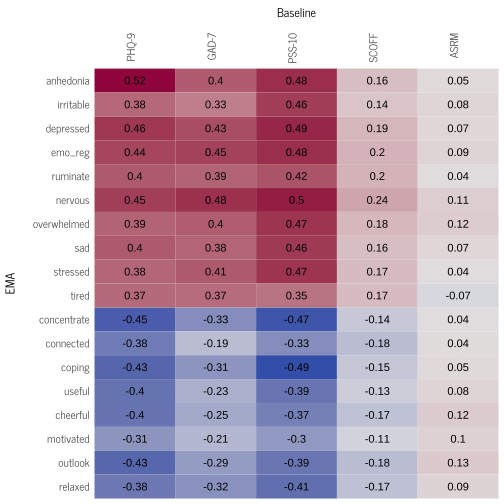
- 心理状态相关的基线和各个EMA指标之间相关接近，说明并不能有效区分
- 大多数项目与进食障碍问卷（SCOFF）和躁狂问卷（ASRM）的相关性较弱
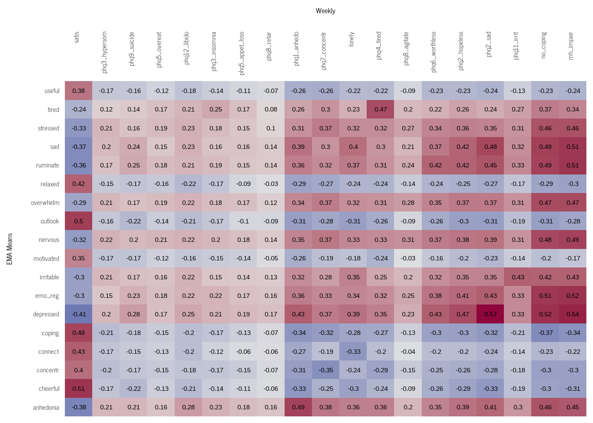
- 回顾性报告和日常报告的关系
- 日均抑郁与整体抑郁相关为0.56（95% CI = [0.54, 0.58]），预测效果较好
3 讨论
- 未讨论类似结构方程模型的时间序列
- 没有统一有效的关于时间序列信效度的检验方法
- 选项背后的原因需要通过认知性访谈补充
参考文献
Haslbeck, J., Ryan, O., & Dablander, F. (2023). Multimodality and skewness in emotion time series. Emotion, 23(8), 2117–2141. https://doi.org/10.1037/emo0001218
Siepe, B. S., Rieble, C. L., Tutunji, R., Rimpler, A., März, J., Proppert, R. K. K., & Fried, E. I. (2025). Understanding ecological-momentary-assessment data: A tutorial on exploring item performance in ecological-momentary-assessment data. Advances in Methods and Practices in Psychological Science, 8(1). https://doi.org/10.1177/25152459241286877